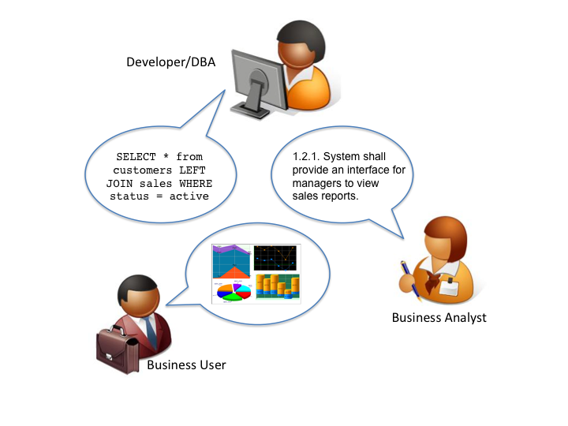

HTSQL -- A Query Language for Accidental Programmers
HTSQL is a high-level navigational query language for relational databases. It is written by Kirill Simonov and Clark Evans in the Python language. HTSQL works with SQLite, PostgreSQL, MySQL, Oracle, and Microsoft SQL Server.
| Presenter: | Clark C. Evans, Prometheus Research, LLC |
|---|---|
| Date: | March 12th, 2011 |
| Location: | PyCon US 2011, Atlanta, GA |
HTSQL Query Preview
For a university database, the following HTSQL request returns returns schools, and for each school the number of corresponding programs and departments (link):
/school{name, count(program), count(department)}
The un-optimized SQL equivalent is:
SELECT sch.name,
(SELECT COUNT(1) FROM program
WHERE school = sch.code),
(SELECT COUNT(1) FROM department
WHERE school = sch.code)
FROM school AS sch
ORDER BY sch.code ASC
HTSQL Query Preview (cont'd)
/school{name, count(program), count(department)} optimally translates into:
SELECT school.name,
coalesce(correlated_department.count,0),
coalesce(correlated_program.count,0),
FROM school as school
LEFT OUTER JOIN (
SELECT school, COUNT(1) as count
FROM department GROUP BY school
) AS correlated_department
ON (correlated_department.school = school.code)
LEFT OUTER JOIN (
SELECT school, COUNT(1) as count
FROM program GROUP BY school
) AS correlated_program
ON (correlated_program.school = school.code)
ORDER BY school.code ASC
Direct use in Python
HTSQL can be used either as a WSGI component, or directly as a data query tool within Python.
- ::
>>> from htsql import HTSQL >>> from htsql.request import produce >>> htsql = HTSQL('pgsql:htsql_regress') >>> with htsql: ... for row in produce('/school'): ... print row ...
HTRAF Dashboarding

- HTRAF toolkit (JQuery MIT)
- Automatically manages dependencies
- Uses HTSQL for data source
- via data-xxx attributes
- and $variable substitution
HTRAF Dashboard Source
<body>
<h3>Select a School</h3>
<select id="school"
data-htsql="/school{code, name}?exists(department)">
</select>
<h3>Departments</h3>
<p>Filter by name: <input id="dept_name"/></p>
<table id="department"
data-htsql="/department{code, name, school.name}
?school=$school&name~$dept_name"></table>
<p>The number of courses in this department:
<strong data-htsql="/department{count(course)}
?code=$department"></strong>
</p>
<h3>Courses</h3>
<table id="course"
data-htsql="/course?department=$department"></table>
</body>
Evolution of HTSQL
- In 2004, HTSQL started as an XPath-like tool so we could use XSLT on top of PostgreSQL.
- By 2006, data analysts were routinely bypassing our app's user interface, using HTSQL to directly access their data.
- By 2008, we had refactored HTSQL several times, with feature and usability feedback from our user base... data analysts.
- In 2010, we started a rewrite of HTSQL "2.0" in order to fix defects and add features that we couldn't in the 1.0 code base.
- Now, in 2011, we're 2/3 done with migrating 1.0 features and will likely finish by 2012.
What is HTSQL?
HTSQL is...

- a web access gateway for relational databases
- a sophisticated navigational query language
- a multi-target optimizing query compiler
- a social data-set sharing & refinement tool
HTSQL processor takes a URL, translates it into SQL, executes the query against the relational backend, and returns the formatted result.
Relational Database Web Service
HTSQL wraps your database with a comprehensive, documented web service API.
- HTSQL URLs are translated into SQL
- has JSON, HTML + pluggable formats
- web service does auth & encryption
- access restricted to exposed tables
- 95%+ of query needs are expressable
- 5% of remaining needs exposed as VIEWs
Navigational Query Language
HTSQL is a new kind of query language; although implemented as SQL -- it isn't relational
- uses navigation metaphor
- design center is set-oriented retrieval
- complex aggregates, linking, and projections
- macros used to factor common sub-expressions
- row definition separate from field selection
- multi-segment queries for hierarchical output
- language design field-tested for 5 years
Multi-Targeting Optimizing Compiler
HTSQL is a full-blown compiler targeting SQL variants from various DBMS implementations.
- SQLite, PostgreSQL, MySQL, MSSQL, Oracle
- unified semantics across DBMS vendors
- works with existing relational schemas
- optimizer tries to find optimal SQL form
- easy to add new functions and data types
- detailed contextual error reporting
- robust regression test suite
Social Data Set Sharing (2/2)

- shared language among team members
- queries are emailed & tweaked
- test cases include live queries
- queries are concrete evidence
HTSQL in 10 Minutes
Let's assume we have a data model, with schools, departments, programs and courses. Here it is:
+-------------+ +--------+
/---m| DEPARTMENT |>-----o| SCHOOL |m----\
|. +-------------+ . +--------+ .|
| . . . |
| department department a school |
| offers may be part has one or |
| courses of school programs |
| |
| +-------------+ +---------+ |
\---<| COURSE | | PROGRAM |>---/
+-------------+ +---------+
#1 - Selecting Data
- curly brackets are selectors
- postfix operators are sorting (+/-)
An example (E1):
/course{department+, no, credits-, title}
#2 - Linking Data
- we use period to signify a link, or join
- wildcard * pulls all columns from a table
An example (E2):
/department{school.name, *}
#3 - Filtering Data
- question mark ? indicates filter
- single-quote literal strings
For example (E3):
/course?credits<3&department.school='ns'
#4 - Aggregating Data
- one-to-many links are "plural"
- all plural links require aggregates
- nested aggregates are possible
An example (E4):
/school{code, avg(department.count(course))}
#5 - Projections
- projections (^) build DISTINCT relations
- implemented in 2.1; documentation needed ;)
An example (E5):
/(program^degree){*,count(^)}
#6 - Pluggable Formatters
- use /:format to specify formatter
- supports CSV, JSON, TXT, HTML
- XML, YAML and others in later releases
An example (E6):
/school/:txt
#7 - Table Expressions
- use limit(#, offset) to slice data
- use sort() to sort a table expression
- other forms of table expressions possible
An example (E7):
/department.sort(school).limit(10,5)
#8 - Multi-Segments
- use slash / to make hierarchical sets
- perhaps in version 2.2 or 2.3?
An example (E8):
/school{code, /department, /program}
Development Status
HTSQL is quite usable currently, but it may have gaps for a given application. Particular items we'll be addressing in coming months are:
- a mechanism to override catalog configuration
- a way to add custom commands and formatters
- hierarchical queries
- streaming result sets
- more maturity and exciting features!
How do I get it?
Open Community
- source code is up on bitbucket
- free of charge for PostgreSQL, MySQL, etc.
- no restrictions on commercial applications
- we are at #htsql on irc.freenode.net
Dual-License & Support
- license for use /w commercial database systems
- we sell support packages and consulting
Q&A
Please visit our community site, http://htsql.org, our commercial site http://htsql.com, we are best found at #htsql on freenode. The source code is freely available at http://bitbucket.org/prometheus/htsql
Generous support for HTSQL was provided by Prometheus Research, LLC and The Simons Foundation. This material is also based upon work supported by the National Science Foundation under Grant #0944460.
Social Data Set Sharing (1/2)
